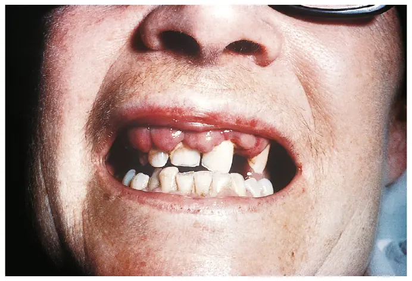
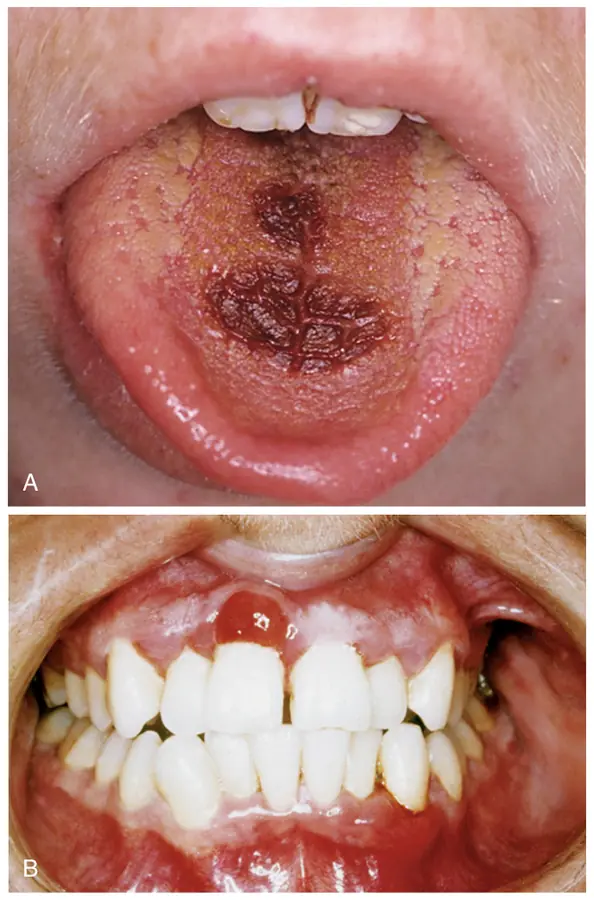

نسخه استخراجشده؛ ترجمه یا تأیید علمی انجام نشده است. وضعیت: captured
پسر ۱۷ سالهای از خونریزی لثه شکایت دارد. لثهی همهی دندانها متورم، اسفنجی و پرخون است، روی کام چند پتشی میبینی و مادرش میگوید یک ماه است تب و خستگی دارد. جرم زیادی هم ندارد. چه باید بکنی؟

لوسمی سرطان گلبول سفید در مغز استخوان و خون است. سلول سرطانی مغز استخوان را پر میکند و جای ردههای سالم را میگیرد؛ پس بیمار همزمان کمخونی، کمبود پلاکت و کمبود گلبول سفید کارآمد دارد: خونریزی، عفونت و ترمیم کند.
نکتهی طلایی: بزرگی لثه در لوسمی از ارتشاح سلولهای لوسمیک است، نه فقط پلاک. تا ۴۰٪ لوسمیهای حاد و حدود ۱۰٪ مزمنها آن را دارند؛ بیشتر در AML و با بهداشت دهان ضعیف.
بیمار مشکوک را بیدرنگ برای CBC با دیفرانسیل و اسمیر خون به پزشک ارجاع بده. لوسمی تشخیصدادهنشده پس از جراحی خونریزی جدی، عفونت و ترمیم مختل میدهد.

در لوسمی حاد شیمیدرمانی اغلب چند روز پس از تشخیص شروع میشود؛ کار ضروری را پیش از نوتروپنیک شدن بیمار سریع انجام بده. بیمار در بهبودی کامل (remission) بیشتر درمانهای لازم را میتواند بگیرد.